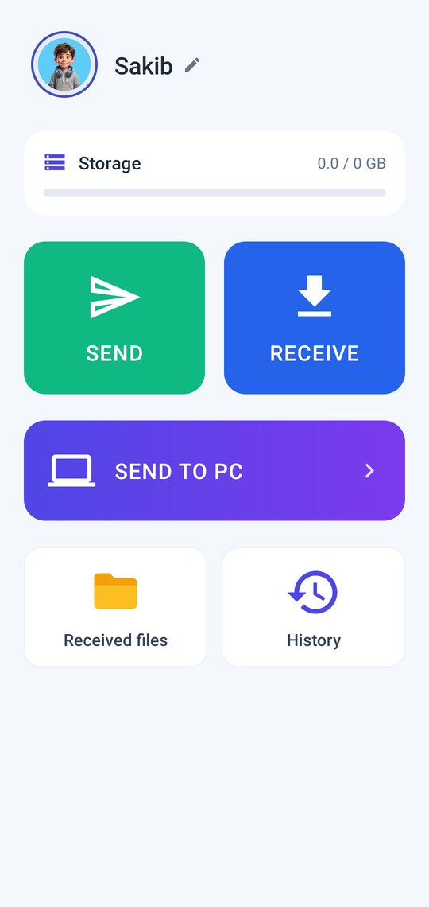
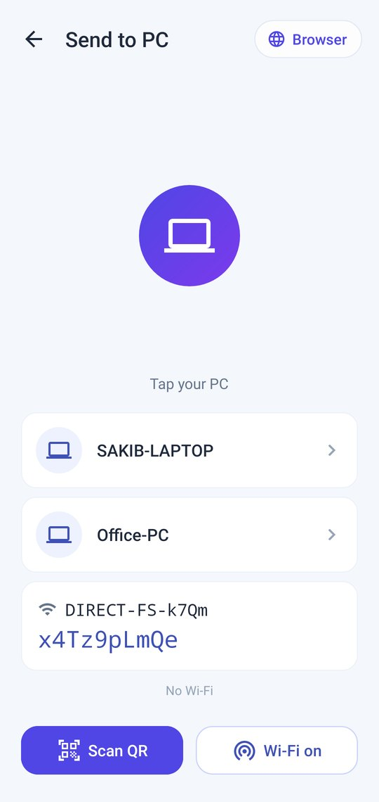
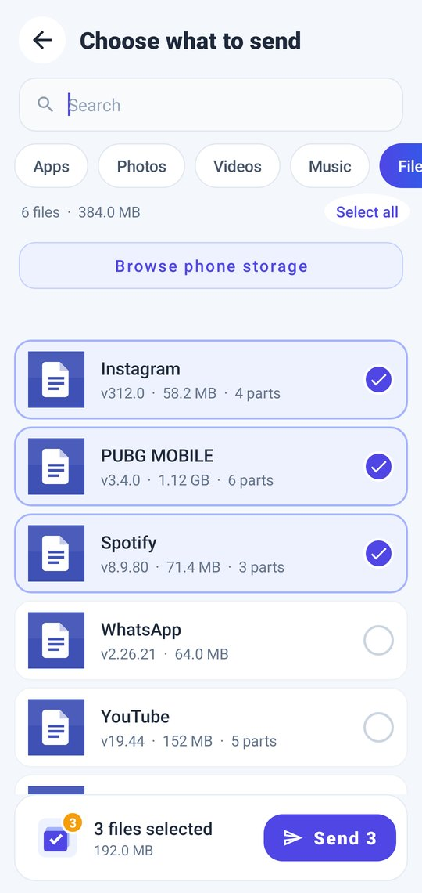
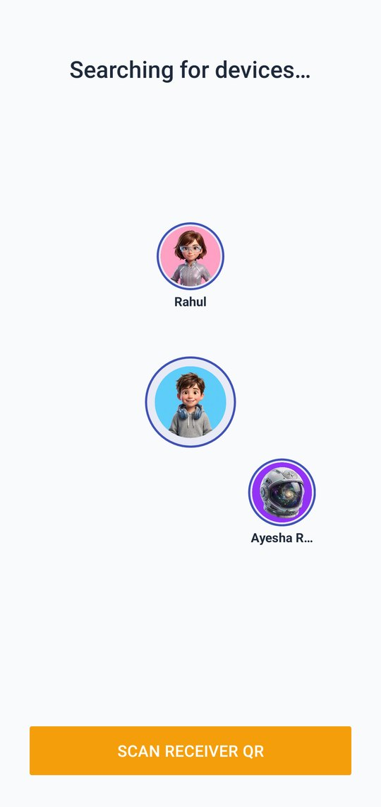
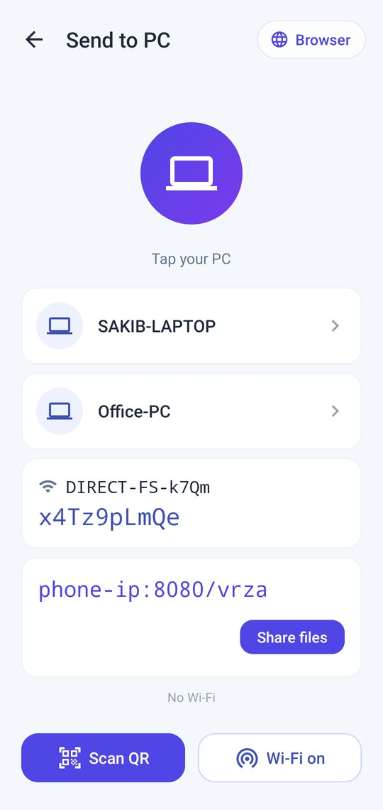
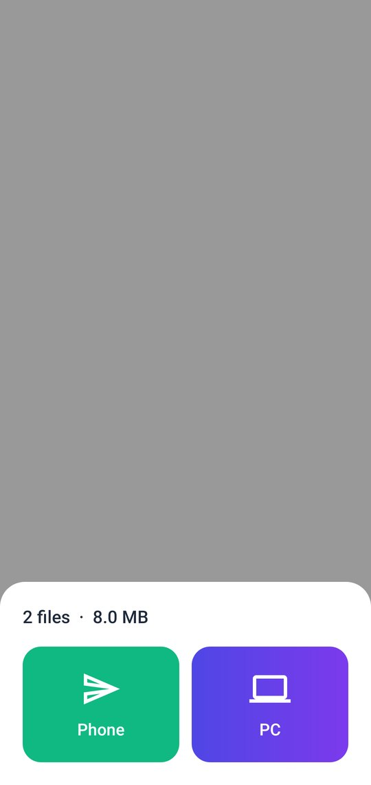
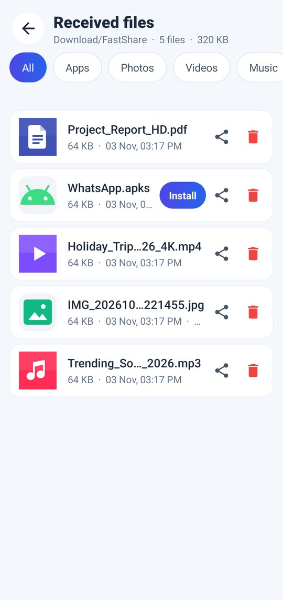
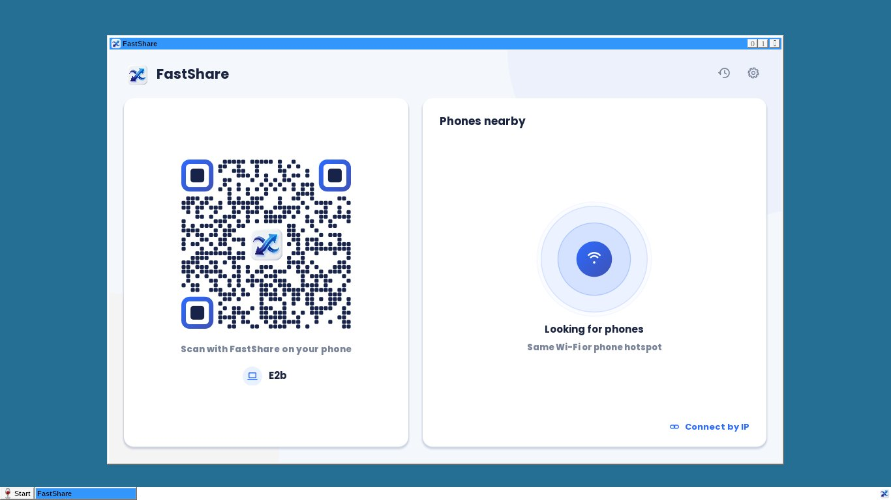

Send photos, videos, apps, music and whole folders over a direct Wi-Fi link. No internet, no cable, no account.
Android 7.0+ · Windows 7 SP1 / 8.1 / 10 / 11 · Also: Windows portable · Windows 32-bit · all files & checksums


| Your phones | Link | Typical speed |
|---|---|---|
| Either phone 2.4 GHz-only (many budget phones) | 2.4 GHz Wi-Fi 4 | ≈ 5–12 MB/s |
| Both phones 5 GHz Wi-Fi 5 | 5 GHz | ≈ 20–40 MB/s |
| Both phones Wi-Fi 6, close together | 5 GHz Wi-Fi 6 | 40+ MB/s |
A direct transfer can't be faster than the Wi-Fi radios in both phones. FastShare picks the fastest link both support and shows the real speed.






No account. Your files go straight from one device to the other over your local Wi-Fi or Wi-Fi Direct link and are never uploaded to a server. The Android app shows ads (Unity Ads), which use the internet and may use the advertising ID.